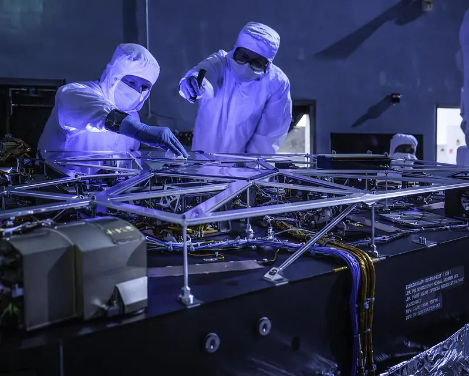
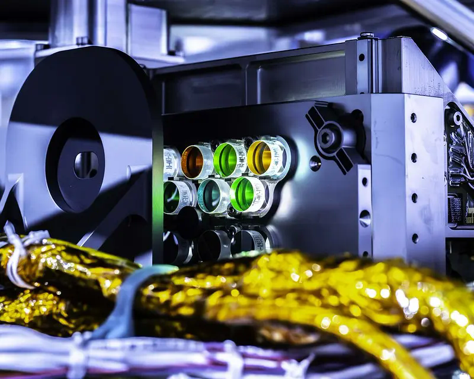
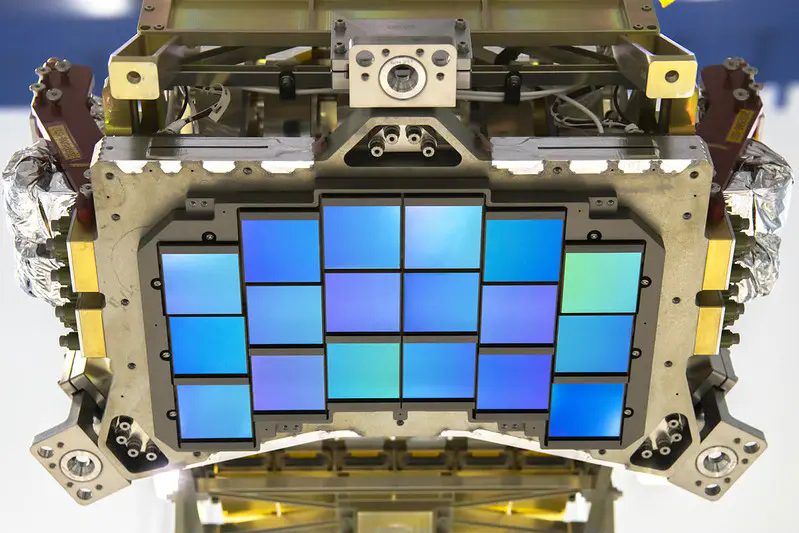

Resource architecture
Helped define the launch-resource page structure and identify the mission timeline, presentations, activities, toolkits, supporting resources, and event pathways hosts need.

Case study 03 · Launch-era engagement
Roman Community Events turns a national mission milestone into shared local learning. My work helps facilitators find a clear entry point, choose what fits their setting, and host the science with confidence.
From mission to community ↓
The opportunity
Roman’s launch gives audiences a real-time reason to connect with dark energy, exoplanets, galaxies, stars, and cosmic history. For community organizations, the challenge is not a lack of material. It is deciding what to use, how much to take on, and how to make a survey telescope tangible.
The work therefore begins before launch: organize the resources, translate the mission into facilitator-ready pathways, recruit hosts across geographies, and build a participation model that can scale without asking every site to do everything.

The strategic inheritance
Roman builds on the partner-centered model established through Webb Community Events: treat local organizations as experts, provide modular support, create sustainable access to mission knowledge, and evaluate what participation produces.
But Roman’s public story is different. The engagement system has to make wide-field surveys, pattern-finding, large datasets, dark energy, and exoplanet discovery feel concrete.
My contribution
My contribution sits between mission knowledge and facilitator action: defining the resource architecture, shaping audience-friendly explanations, and helping partners build realistic programs.
Helped define the launch-resource page structure and identify the mission timeline, presentations, activities, toolkits, supporting resources, and event pathways hosts need.
Developed a concise orientation that translates Roman into three ideas: wide views, high detail, and pattern-finding at scale.
Organized field-of-view, exoplanet, and expanding-universe entry points so hosts can choose one coherent experience instead of using every resource.
Presented launch-season supports to facilitator and professional audiences, gathering questions and resource gaps before events accelerate.
This current initiative is collaborative work across the Roman mission, NASA’s Universe of Learning, STScI, Goddard, and community partners. The page describes my documented contribution within that wider team.
The facilitator lens
Compare what telescopes can see at once and why wide surveys help scientists find patterns.
Explore detection methods, coronagraph technology, and Roman’s place in a larger observatory ecosystem.
Connect dark energy, cosmic scale, and the information carried by light.


Designing for reality
Facilitator support treats capacity as a design constraint, not a deficit. A Roman event can be a small addition to an existing program, a focused activity station, or a multi-part launch celebration.
Add Roman visuals, a comparison, or a talking point to an astronomy night, table, or existing program.
Host a Roman activity station, library program, museum-floor experience, or community talk.
Build a launch or First Look event with partners, multiple activities, speakers, and shared promotion.
The best format is the one the host can sustain and the audience can meaningfully enter.
The value created
The resource hub, facilitator toolkit, event map, presentations, and partnership structure do more than promote launch. Together, they give organizations the confidence and agency to translate Roman for their own communities—and create a field ready to keep learning after the countdown ends.
The portfolio connection
Webb proved the participation model. Roman is where I apply the learning with greater intention.
This work joins network building, public participation, science translation, and continuous improvement. It shows how I move from successful precedent to a more deliberate system—one designed around real facilitators, varied capacity, and the long life of a mission.